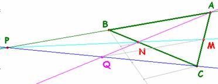

Para
el aula.
Problema
275.- 01. En un triángulo ABC, M es el punto medio del lado
AC y N es el punto del lado BC tal que CN = 2BN. Si P es el punto de
intersección de las rectas AB y MN, demuestra que la recta AN corta al segmento
PC en su punto medio.
X Olimpiada Matemática Rioplatense ( San Isidro, 12 de Diciembre de
2001)(Nivel I – Primer Día)
Solución de Saturnino
Campo Ruiz,, profesor del IES Fray
Luis de León, de Salamanca..-

N es el baricentro de un triángulo donde las rectas CB, AN y MN son sus medianas. Dos vértices del mismo son A y C. El otro se obtiene de la intersección del lado AB con la mediana MN, el punto P. De ahí se deduce que Q es el pie de la mediana desde A, del triángulo PCA, como se quería probar (y B es el punto medio de PA).